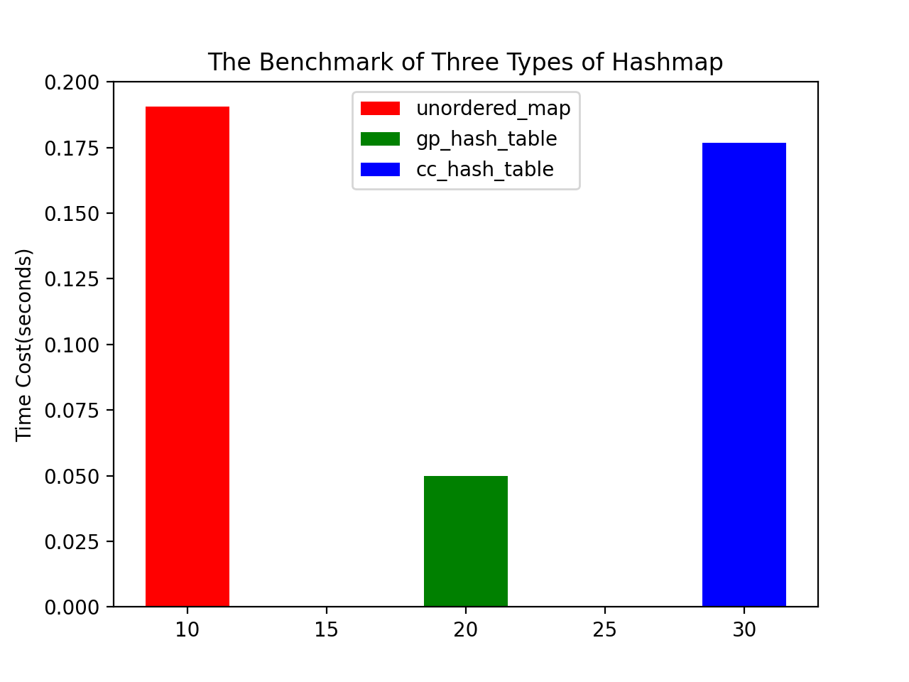
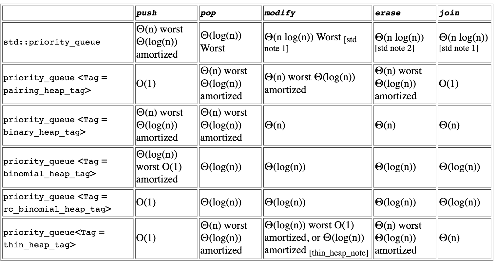

Some Other Good Resources:
If you ask a C++ coding competitor why he or she chooses such language, he or she may tell you one reason is that C++ STL is powerful since it has already provided a lot of data structures, such as priority queue, hashmap. It also provide some built-in algorithm, covering sorting, merging, high order functions. But STL still do not provide some other data structures, such as trie for coding competitors. Luckily we have a GCC extension called Policy Based Data Structure (PBDS) that cover some advanced data structures, such as a red black tree that have order statistics, a trie or a pairing-heap. If we are allowed to use them in the competition, it will hugely save your time and you don't need to implement them again and again.
Unlike my other articles, this article is a short introduction of some basic usage of this extension. And before that, you need to include its relative header files like this:
#include <bits/stdc++.h> // import C++ standard lib
#include <ext/pb_ds/assoc_container.hpp>
#include <ext/pb_ds/tree_policy.hpp> // include this to use rbtree
#include <ext/pb_ds/hash_policy.hpp> // include this to use hashmap
#include <ext/pb_ds/trie_policy.hpp> // include this to use trie
#include <ext/pb_ds/priority_queue.hpp> // include to use pairing heap
using namespace std;
using namespace __gnu_pbds;
Alternatively, there is another way to make it shorter, like this:
#include <bits/extc++.h>
using namespace std;
using namespace __gnu_pbds;
There are two types of hash maps in PBDS, we can define them like this:
cc_hash_table<int, int> ht_cc;
gp_hash_table<int, int> ht_gp;
Unlike std::unordered_map, cc_hash_table are collision-chaining hash-based, while gp_hash_table are probing hash-based.
If you want to make them into hashsets, we can define their values like this:
cc_hash_table<int, null_type> hs_cc;
gp_hash_table<int, null_type> hs_gp;
And its usage is pretty similar to std::unordered_map, here is an example:
#include <bits/extc++.h>
using namespace std;
using namespace __gnu_pbds;
int main() {
gp_hash_table<int, int> ht;
ht.insert({1, 2}); // insertion
assert(ht[1] == 2);
ht[1] = 5; // update
assert(ht[1] == 5);
ht.erase(1); // remove
assert(ht.find(1) == ht.end());
assert(ht.empty()); // check if it is empty
ht.insert({2, 2});
assert(ht.size() == 1); // check its size
ht.clear(); // clear all pairs
}
Similar to std::unordered_map, you can also provide a custom hash function to it:
#include <bits/extc++.h>
using namespace std;
using namespace __gnu_pbds;
using pii = pair<int, int>;
struct Custom_Hash {
size_t operator()(const pii &obj) const {
return hash<int>()(obj.first) ^ hash<int>()(obj.second);
}
};
int main() {
gp_hash_table<pii, int, Custom_Hash> ht;
ht.insert({{1, 2}, 6});
assert((ht[{1, 2}] == 6));
}
So how is its performance, well, I did a benchmark on these 3 types of hashmaps by insertion and deletion of numbers from 0 to 1000000 multiple times to compare their average time cost and here is the result:

So normally if gp_hash_table is allowed in the competition, it would be your first choice, a better hash function will further help increasing the performance.
Since the data structure under std::map is a red-black tree, it has no public API and it does not provide a rank-query interface. Luckily, PBDS provides three types of balanced tree, that is red-black tree, splay tree and ov-tree. I will focus on the red-black tree since it is faster in most cases than other two, here is an example, and remember, keys in a red-black tree are unique:
#include <bits/extc++.h>
using namespace std;
using namespace __gnu_pbds;
struct Node {
int first;
int second;
explicit Node(int first, int second) : first(first), second(second) {}
bool operator < (const Node &obj) const {
if (first == obj.first) {
return second < obj.second;
}
return first < obj.first;
}
bool operator==(const Node &rhs) const {
return first == rhs.first &&
second == rhs.second;
}
};
using RBTreeOfNode =
tree<
Node, // The datatype that stores in the tree
null_type, // Just keys, no mapping values
less<>, // Order by <
rb_tree_tag, // Use RBTree
tree_order_statistics_node_update // The policy of update
>;
int main() {
// Define a red-black tree with its default constructor
RBTreeOfNode Rbtree;
// insertion
Rbtree.insert(Node(1, 2));
Rbtree.insert(Node(1, 3));
Rbtree.insert(Node(1, 7));
// deletion
Rbtree.erase(Node(1, 3));
// obtain the rank
assert(Rbtree.order_of_key(Node(1, 2)) == 0);
// obtain the kth element and return an iterator
assert((*Rbtree.find_by_order(0)) == Node(1, 2));
RBTreeOfNode Rbtree2;
Rbtree2.insert(Node(2, 3));
// Merge Rbtree2 into Rbtree, thus Rbtree2 will be empty
Rbtree.join(Rbtree2);
assert(Rbtree2.empty()); // check if it is empty
// Split Rbtree, all keys in Rbtree <= Node(1, 1) remain in Rbtree,
// others will move to Rbtree2
Rbtree.split(Node(1, 2), Rbtree2);
// Check size
assert(Rbtree.size() == 1);
Rbtree.insert(Node(1, 3));
Rbtree.insert(Node(1, 4));
// Return the iterator to the first key that is >= Node(1,3)
assert(*Rbtree.lower_bound(Node(1,3)) == Node(1,3));
// Return the iterator to the first key that is > Node(1,3)
assert(*Rbtree.upper_bound(Node(1,3)) == Node(1,4));
// If no such key is found, return the end of the tree
assert(Rbtree.upper_bound(Node(1, 4)) == Rbtree.end());
}
And remember that all operations above except for the size checking is \(O(\log{n})\) where \(n\) is the number of nodes in the tree.
The way to define and use of a trie is pretty similar to the red-black tree, here is the example:
#include <bits/extc++.h>
using namespace std;
using namespace __gnu_pbds;
using Trie =
trie<
string,
null_type,
trie_string_access_traits<>,
pat_trie_tag,
trie_prefix_search_node_update
>;
int main() {
// Define a trie with its default constructor
Trie t;
// insertion
t.insert("abcd");
t.insert("abcde");
t.insert("abc");
t.insert("abcdef");
t.insert("bcde");
// erase
t.erase("abcde");
// check size
assert(!t.empty());
assert(t.size() == 4);
// search
assert(t.find("abcde") == t.end());
// iterate and print all strings with prefix "abc"
auto range = t.prefix_range("abc");
for (auto it = range.first; it != range.second; ++it) {
cout << *it << '\n';
}
}
There are multiple implementations of priority queue in PBDS, all of them can be defined as below, with integers as keys:
priority_queue<int, greater<>, tag> min_heap; // min-heap
priority_queue<int, less<>, tag> max_heap; // max-heap
The tag can be pairing_heap_tag, thin_heap_tag, binomial_heap_tag, rc_binomial_heap_tag, binary_heap_tag, here is the complexities of the different underlying data structures in terms of orders of growth, which comes from the GNU official's documentation:
Thus, in most cases you should choose the pairing heap as the first option, since it is faster than other five types of heaps. At the end of the article, I will share with you the implementation of Dijkstra's algorithm on searching the shortest path from a to b using a pairing heap, which is a template I use often in the coding competitions:
#include <bits/extc++.h>
using namespace std;
using pii = pair<int, int>;
// The implementation of Dijkstra using an adjacency list
namespace Dijkstra {
constexpr int INF = 0x3f3f3f3f; // A weight indicates two nodes have no paths between them
vector<vector<pii> > adj; // The adjacency list of the graph
int number_of_nodes;
vector<int> dis; // dis.at(n) = the shortest distance from source to n
inline void
init(int n, bool store_path = false) {
number_of_nodes = n;
// initialize the containers
adj.resize(number_of_nodes + 5);
dis.resize(number_of_nodes + 5, INF);
}
inline void
add_edge(int u, int v, int w) {
adj.at(u).emplace_back(make_pair(v, w));
}
inline void
dijkstra(int source) {
dis.at(source) = 0;
__gnu_pbds::priority_queue<pii, greater<>, pairing_heap_tag > pq;
pq.push(make_pair(dis.at(source), source));
while (!pq.empty()) {
int d_v = pq.top().first;
int v = pq.top().second;
pq.pop();
if (d_v != dis.at(v)) {
continue;
}
for (const auto &[to, weight] : adj.at(v)) {
if (dis.at(to) > dis.at(v) + weight) {
dis.at(to) = dis.at(v) + weight;
pq.push(make_pair(dis.at(to), to));
}
}
}
}
}
int main() {
int number_of_nodes, number_of_edges, a, b, u, v, w;
cin >> number_of_nodes >> number_of_edges >> a >> b;
Dijkstra::init(number_of_nodes);
while (number_of_edges--) {
cin >> u >> v >> w;
Dijkstra::add_edge(u, v, w);
}
Dijkstra::dijkstra(a);
if (Dijkstra::dis.at(b) == Dijkstra::INF) {
cout << "No routes from a to b!";
} else {
cout << Dijkstra::dis.at(b);
}
cout << '\n';
}